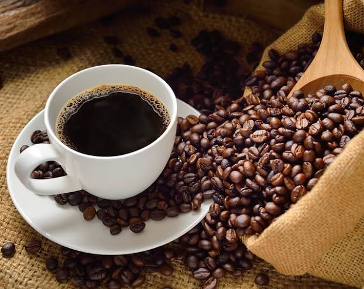

Tentang Kami
Arunika coffee adalah coffee shop terkini dengan nunsana sunrise. Filosofi diambil dari matahari terbit yang membangkitkan semangat pagi dengan secangkir kopi.
Mengapa Memilih Kami?
- Pilihan variasi produk yang banyak
- Bersertifikat halal
- Dikerjakan oleh petani kopi lokal
Cara Pemesanan
- Pilih produk dan jumlah
- Hubungi kami melalui WhatsApp
- Lakukan pembayaran, pesanan dikirim
Produk dan Harga
| Produk | Varian | Harga |
|---|---|---|
| Americano | panas | Rp18.000 |
| Americano | dingin | Rp20.000 |
| Mokacino | panas | Rp21.000 |
| Mokacino | dingin | Rp22.000 |

Hubungi Kami
Purwokerto
Banyumas, Jawa Tengah
Lokasi Kami
Temukan lokasi usaha Arunika coffee di Purwokerto.